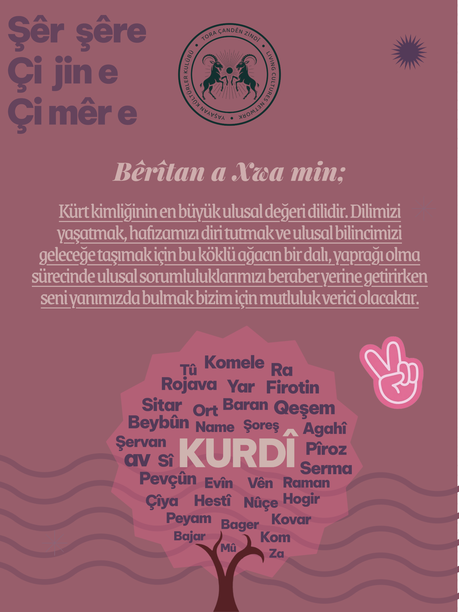

Günün Kavramı
Ortadaki kavrama tıkla.
Burada kavram açıklaması görünecek.
🍃 25 Kavram
•
Ortadaki kelime “bugünün kavramı”

KURDÎ
Her gün tema rengi ve ortadaki kavram değişir. Ortadaki kavrama tıkla: açıklama üstte açılır.
